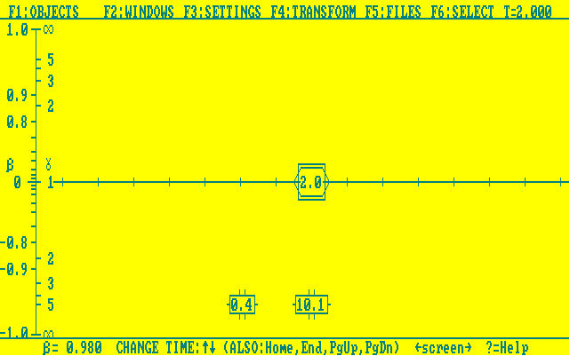
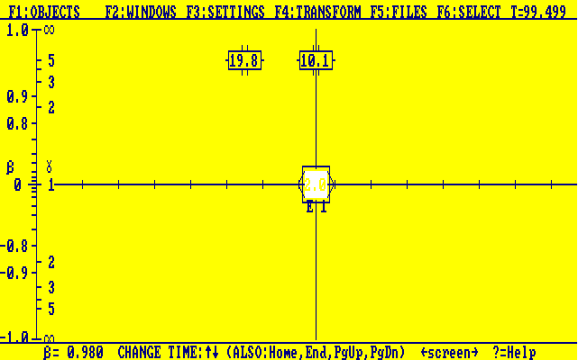
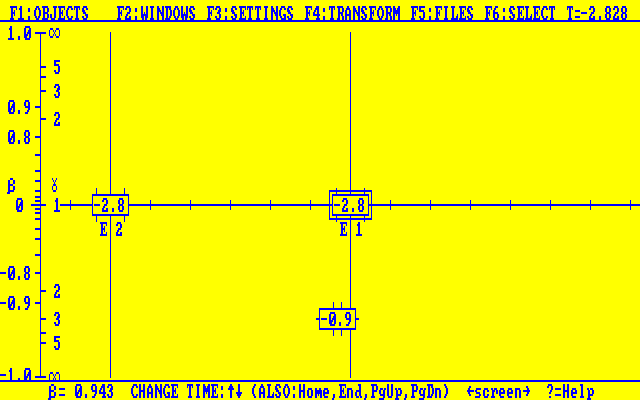
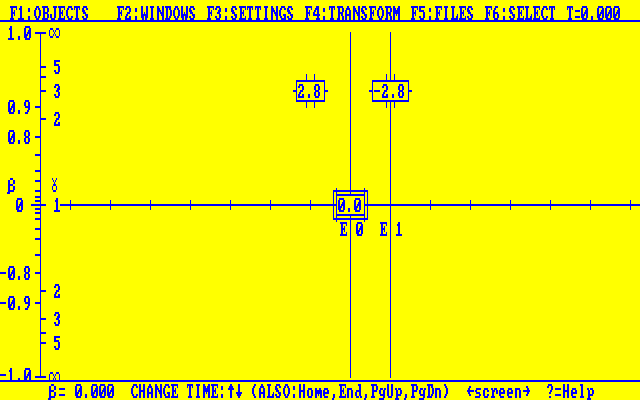
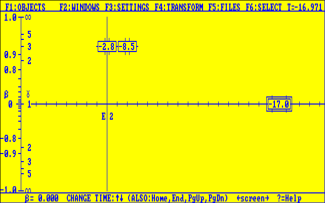
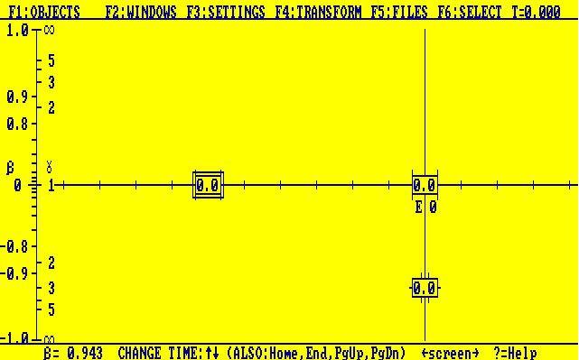
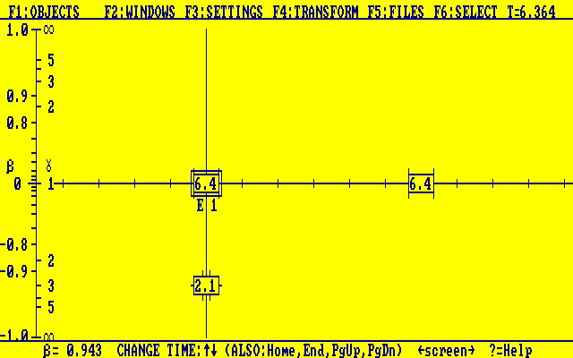
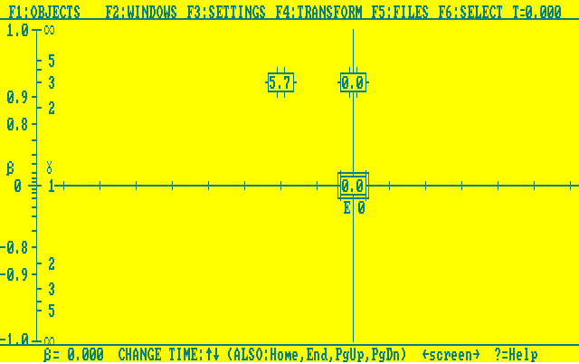
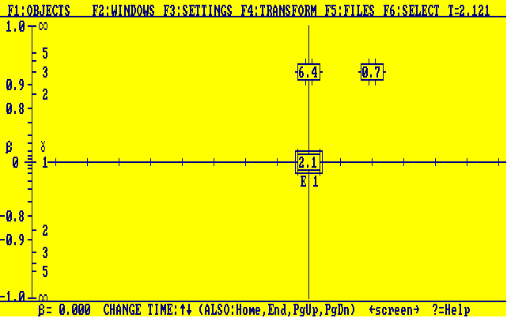

The two pertinant diagrams are right before:
and right after:
turnaround. They show a jump from .4yr to 19.8yr for the clock on earth. Up to the point of turnaround the results are contradictory to the traditional understanding of the twin paradox because the twin on the spaceship has aged 2yr and the one on the earth has only aged .4yr. The process of acceleration in turning brings the results back to what is commonly known; that the twin moving on the ship will have aged less over the course of the trip.
The two events take place at the same time from the perspective of the clocks:
For the perspective of the clocks, however event one:
and event two:
take place at different times. This means that a person not traveling with the clocks will measure a longer length for the rod than someone traveling with the rod. This is the same basic situation that was put forth in the book with the train paradox in chapter 3.
The two different frames will observe different times for the bar to pass the same point; though both percieve the same relative speeds for the bar and the point. Therefore they will perceive different lengths for the bar. From the bar frame:
 And from the points frame:
 The time difference in the bar frame is 6.4s and the time in the point frame is 2.1s. The ratio between those is very close to 3 (γ) and the ratio of the perceived lengths is the same with the bar in its own frame appearing to be 6 units (3 times the length in the point frame).